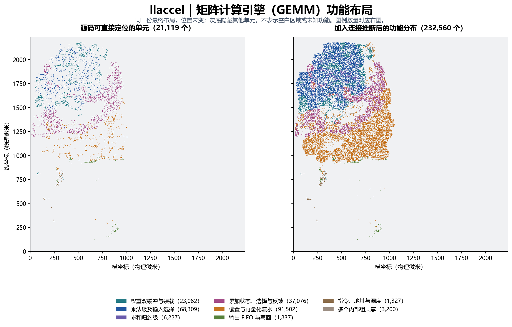
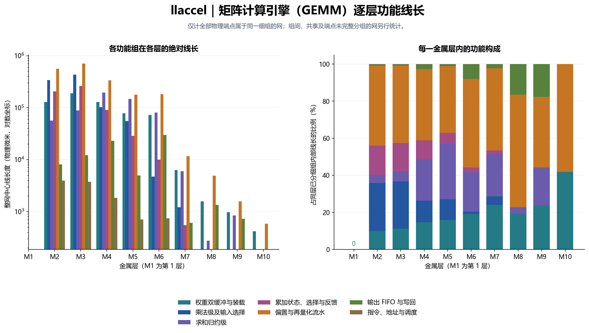
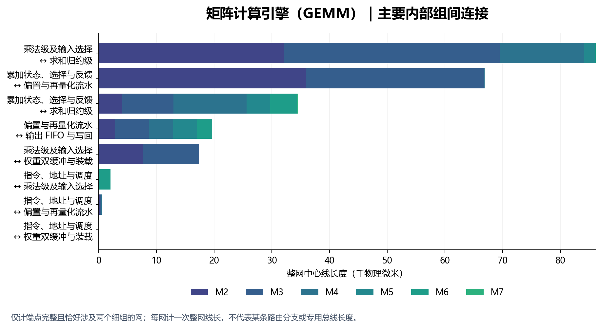
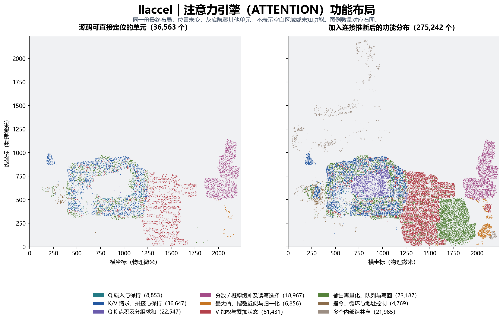
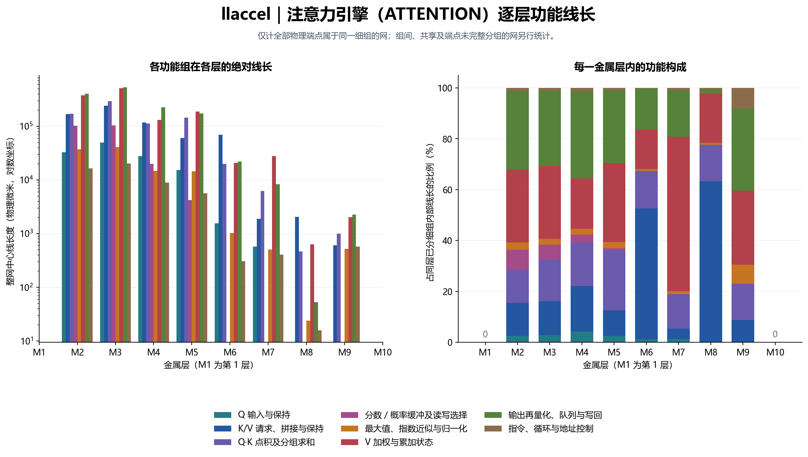
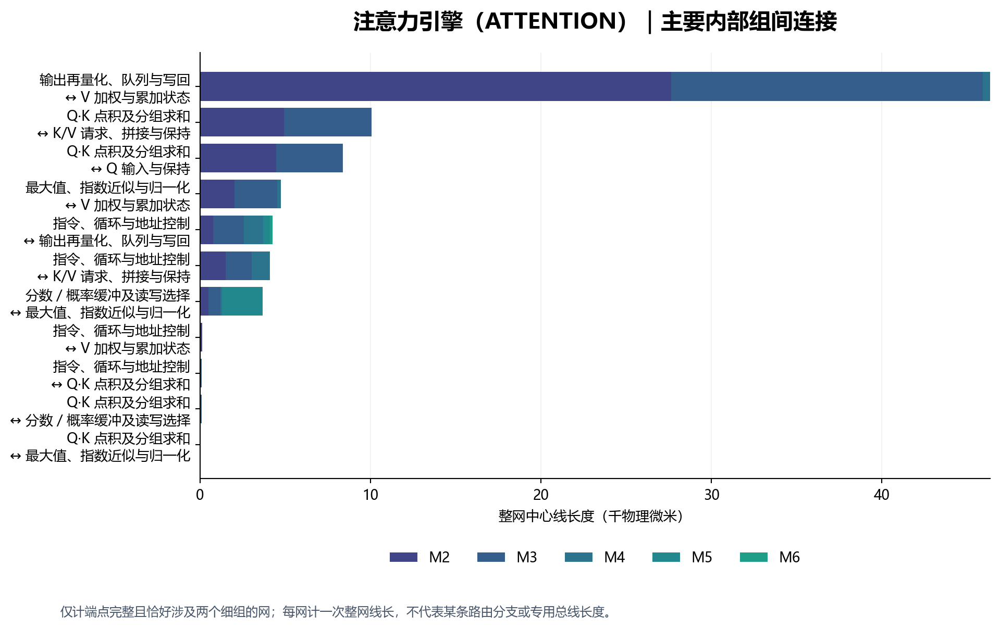
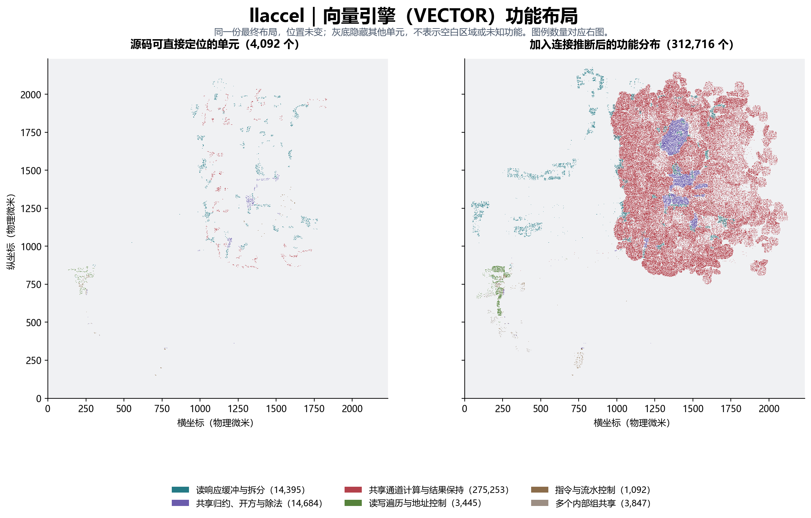
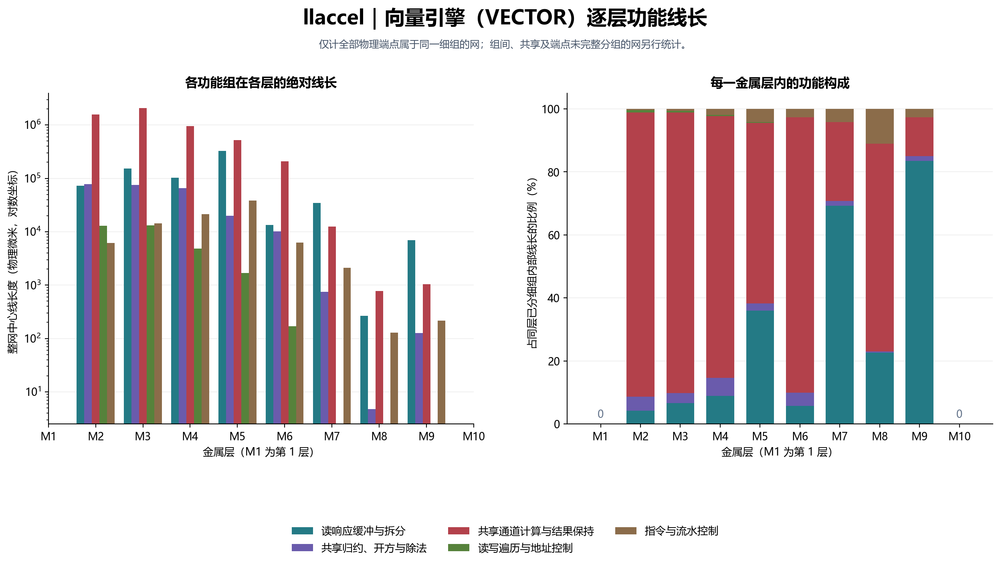
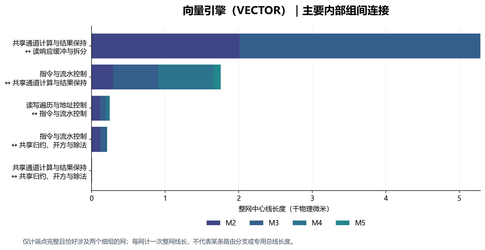

llaccel：引擎内部功能布局与逐层布线
2026-10-20 · Nangate45 工艺库 · 顶层模块 llaccel_core · 源码提交 f7db8a2 · 补充研究
本报告对最终物理端点重新分组，区分矩阵计算、注意力和向量引擎的内部功能。所有细组使用相同的保守规则，并把共享、边界及未完整归属的网单列。
最终作业 89069 已完成，最终网表等价检查通过。2026-10-20 核对的最终物理数据库与网表文件校验值（SHA256）均与原报告快照一致，本次沿用该真实布线数据。独立静态时序分析与归档任务尚未完成；这里的结果是物理布局和连线统计，不构成时序签核结论。
与 openTPU 怎么对照
两个项目都能服务大语言模型推理，差别主要在硬件组织。本次物理实现比较的是 openTPU 的计算分片（slice）范围与 llaccel 的计算核心（core）范围；名称并不规定谁更高一级。矩阵计算内部最直接的对应是 openTPU 的矩阵运算单元（MXU）与这里的矩阵计算引擎（GEMM），注意力引擎（ATTENTION）、向量引擎（VECTOR）则另外展开。
llaccel_core 不包含静态存储器（SRAM）的存储体，只保留存储互连和外部存储体端口；openTPU 案例包含 ACT_RAM、TMEM 等存储宏。不能直接根据两个完整芯片图的面积或线长占比判断存储开销高低。
命令处理器 → 数据搬运／矩阵计算／向量运算／注意力计算
四个引擎 ↔ 静态存储互连 ↔ 核心外的静态存储体
注意力引擎、数据搬运引擎（DMA）、指令取回 ↔ 动态存储访问仲裁 ↔ 外部动态存储器（DRAM）
模型层的“矩阵计算产生结果供注意力计算使用”，可能经静态存储器写入再读取实现。报告中的组间连线严格依据物理网端点；没有推断一条不存在的引擎间专用总线。
矩阵计算引擎（GEMM）：内部结构、布局与逐层布线
矩阵计算引擎（GEMM）采用 16×16 路 8 位整数乘法和 16 路求和归约，结果写入 16×16 个 32 位累加状态。它没有 Gemmini 那种二维相邻处理单元（PE）逐跳传递的网格结构，不能按处理单元网格解释本图。
权重双缓冲＋激活读口 → 乘法级 → 求和级 → 累加状态 → 偏置／再量化 → 输出先进先出队列（FIFO）→ 静态存储互连
已分组范围：232,560 个标准单元，其中源码命名 21,119 个、保留信号定位 0 个、按连接追踪 208,241 个、组间共享 3,200 个。
完整端点均能分到本引擎的信号网共 5,242,236.735 μm；其中 M2＋M3 为 62.28%。该范围包含本引擎的共享组，不含跨引擎、端口、时钟复位及未完整归属的网。

左右是同一份布局，位置未变。左：源码可直接定位的 21,119 个单元；右：加入连接推断后的 232,560 个单元，其中褐灰色为多个内部组共享。图例数量对应右图；灰底隐藏其他引擎、未分组单元和填充等物理单元，不表示空白区域或未知功能。图例中的每一类具体包含什么
- “乘法级”含乘法输入选择、乘法逻辑、结果寄存器以及只连向该级的辅助逻辑；“累加状态”含寄存器、读写选择和反馈。图中不是每个点一个乘法器，一个乘法位置由许多标准单元实现。
- 本次 EPILOGUE_FUSION=0，未启用可选的融合激活／残差尾处理；偏置、缩放、舍入、饱和及结果流水仍然存在。因此，尾部组线长较大不能解释成“启用了额外融合算子”。
- 左图只显示保留名称的单元；右图加入沿输出连接追踪、且只连向一个组的匿名逻辑。权重寄存器到乘法级的线路被分在组间，不能用“权重组内线长”代替全部权重分发成本。
金属层与功能分布
同组内部网中，偏置与再量化流水为 1,980,221.075 μm，乘法级及输入选择为 936,290.555 μm；分别占上述完整引擎范围的 37.77%、17.86%。另有 453,914.440 μm 属于组间连线或涉及共享逻辑的网，单列后才与引擎汇总相等。

左图纵轴为对数坐标，显示各层绝对线长；右图显示同一层内各功能组的比例。两图均只统计全部物理端点落在同一细组的网；零值不画对数柱。逐层看：M2、M3 中偏置／再量化组分别占同层已分细组内部网的 43.05%、41.65%；乘法级分别约 26.03%、25.57%。到 M4、M5，求和归约的占比升至 22.21%、29.99%，显示归约连线在这些层比低层更突出。这里比较的是本引擎各细组的层内构成，不是整个芯片各层的使用率。

只展示端点完整、且恰好涉及两个细组的物理网。图中长度是整条网的总长，可能包含控制和多扇出；不等于两个算法算子之间的专用总线。展开逐层平均线长、最小—最大范围与完整分组表
均值／范围以“某条网在某金属层上的去重中心线长度”为样本，单位 μm。跨层网会在不同层各出现一次；不是单根几何线段的长度分布。表内均为同组内部网。
依据：本次实现的 gemm_engine.sv · 单元计数 · 逐层线长与范围 · 组间整网逐层表
注意力引擎（ATTENTION）：内部结构、布局与逐层布线
注意力引擎（ATTENTION）使用 64 条算术通道处理最多 256 维的注意力头，较宽的注意力头分组复用。查询数据 Q 保持在本地寄存器，键／值数据 K/V 从外部动态存储器（DRAM）分段取回；256 项分数缓冲先存分数、后存概率，最后对 V 加权累加并输出。
Q 保持 ＋ K 分段取回 → 点积 → 分数缓冲 ↔ 最大值／指数近似／归一化 → 概率×V → 累加 → 再量化／写回队列
已分组范围：275,242 个标准单元，其中源码命名 36,514 个、保留信号定位 49 个、按连接追踪 216,694 个、组间共享 21,985 个。
完整端点均能分到本引擎的信号网共 5,997,666.270 μm；其中 M2＋M3 为 63.02%。该范围包含本引擎的共享组，不含跨引擎、端口、时钟复位及未完整归属的网。

左右是同一份布局，位置未变。左：源码可直接定位的 36,563 个单元；右：加入连接推断后的 275,242 个单元，其中褐灰色为多个内部组共享。图例数量对应右图；灰底隐藏其他引擎、未分组单元和填充等物理单元，不表示空白区域或未知功能。图例中的每一类具体包含什么
- K/V 组主要是请求标签、响应拼接和一行数据的保持，不是完整键值缓存。完整 K/V 数据在核心外的 DRAM，本布局没有把外部存储体画进来。
- 输出组同时承担 ATTENTION 结果写回与 KV_WRITE 的写队列。组中含多路结果选择、再量化、队列和端口拆分，不能视作一段无计算的“出口连线”。
- 分数／概率组包含 sbuf 的读写选择。概率归一化（softmax）组包含最大值、指数查表近似、求和和除法；p_val 等保留信号作为组合逻辑边界补充依据。这能细分部分匿名逻辑，但并不证明完整的算子物理边界已经恢复。
金属层与功能分布
同组内部网中，输出再量化、队列与写回为 1,368,588.270 μm，V 加权与累加状态为 1,259,421.245 μm；分别占上述完整引擎范围的 22.82%、21.00%。另有 1,435,193.970 μm 属于组间连线或涉及共享逻辑的网，单列后才与引擎汇总相等。

左图纵轴为对数坐标，显示各层绝对线长；右图显示同一层内各功能组的比例。两图均只统计全部物理端点落在同一细组的网；零值不画对数柱。逐层看：M2、M3 主要落在输出处理与 V 加权累加，二者合计分别为 59.51%、58.24%。M6 的 K/V 访问／拼接组占 51.51%，M7 的 V 加权组占 60.70%。高层总线长较少，不能只看百分比就认定高层承担了主要开销；需要同时看左图的绝对量。

只展示端点完整、且恰好涉及两个细组的物理网。图中长度是整条网的总长，可能包含控制和多扇出；不等于两个算法算子之间的专用总线。展开逐层平均线长、最小—最大范围与完整分组表
均值／范围以“某条网在某金属层上的去重中心线长度”为样本，单位 μm。跨层网会在不同层各出现一次；不是单根几何线段的长度分布。表内均为同组内部网。
依据：本次实现的 attn_engine.sv · 单元计数 · 逐层线长与范围 · 组间整网逐层表
向量引擎（VECTOR）：内部结构、布局与逐层布线
向量引擎（VECTOR）的 16 条通道执行均方根归一化（RMSNorm）、旋转位置编码（RoPE）、SiLU 激活、逐元素运算与量化。当前按实际硬件职责分组；不同操作的选择逻辑和部分运算电路会共同落在通道计算组。
双读口 → 响应拆分／FIFO → 共享通道运算 ↔ 归约／开方／除法 → 结果保持 → 写口；三组地址遍历器提供读写地址
已分组范围：312,716 个标准单元，其中源码命名 4,090 个、保留信号定位 2 个、按连接追踪 304,777 个、组间共享 3,847 个。
完整端点均能分到本引擎的信号网共 6,880,705.430 μm；其中 M2＋M3 为 62.74%。该范围包含本引擎的共享组，不含跨引擎、端口、时钟复位及未完整归属的网。

左右是同一份布局，位置未变。左：源码可直接定位的 4,092 个单元；右：加入连接推断后的 312,716 个单元，其中褐灰色为多个内部组共享。图例数量对应右图；灰底隐藏其他引擎、未分组单元和填充等物理单元，不表示空白区域或未知功能。图例中的每一类具体包含什么
- “共享通道计算与结果保持”包括运算选择、定点算术、查表近似、临时结果和输出保持；线长大不等于某一个算子单独占用这些线。
- RMSNorm 的平方和、开方、除法和归一化状态独立标出；RoPE 的 x1/cos/y2 临时寄存器归入通道组。其他组合逻辑只能根据连接确定它服务的硬件组，无法唯一归到某条 ISA 指令。
金属层与功能分布
同组内部网中，共享通道计算与结果保持为 5,328,226.065 μm，读响应缓冲与拆分为 707,612.495 μm；分别占上述完整引擎范围的 77.44%、10.28%。另有 473,514.150 μm 属于组间连线或涉及共享逻辑的网，单列后才与引擎汇总相等。

左图纵轴为对数坐标，显示各层绝对线长；右图显示同一层内各功能组的比例。两图均只统计全部物理端点落在同一细组的网；零值不画对数柱。逐层看：M2、M3 的共享通道计算与结果保持组分别占 90.27%、89.01%。读响应缓冲在 M5 中占 36.02%，在 M7 中占 69.23%；这说明读缓冲和分发在部分高层有明显份额，并不表示它比通道计算消耗更多总线长。

只展示端点完整、且恰好涉及两个细组的物理网。图中长度是整条网的总长，可能包含控制和多扇出；不等于两个算法算子之间的专用总线。展开逐层平均线长、最小—最大范围与完整分组表
均值／范围以“某条网在某金属层上的去重中心线长度”为样本，单位 μm。跨层网会在不同层各出现一次；不是单根几何线段的长度分布。表内均为同组内部网。
依据：本次实现的 vec_engine.sv · 单元计数 · 逐层线长与范围 · 组间整网逐层表
剩余未解析部分究竟是什么
本次提取了 998,787 个实际单元，已排除填充、衬底接触和天线保护单元。专用时钟、复位驱动单元 18,976 个单列；56,804 个单元同时连向不同引擎或顶层端口，保留为跨引擎／外部共同逻辑；另有 26,196 个单元没有足够信息完整分组。
这些并不全是缓冲器。未完整分组的部分包含多路选择器、普通组合门、缓冲器和反相器等；仅知道库单元类型时，可以说明“做选择、缓冲或逻辑运算”，不能由此证明它属于哪个算法功能。
三个引擎内部仍有褐灰色共享单元：它们的输出确实能走到本引擎的多个细组。强行按相邻区域或多数接收端着色，会把共享地址、使能和多路选择逻辑误写成某个算术组，因此保留共享类别。
新图与旧报告的未解析比例不能直接相减。旧图侧重粗粒度接收引擎；这里还要求细组完整、所有物理端点完整，口径更严格。一个网即使部分端点已能解释，也不会把整网强算成某个细组。
怎么得到这些图和数字
- 源码可确认：单元名保留 u_gemm、u_attn 或 u_vec 的状态／子模块名称，按源码职责分类。这里的“来源”就是综合前电路源码中的这些名称。
- 保留信号定位：dot、p_val 等内部网名仍在最终网表中，用其实际驱动端确定少量组合逻辑边界。模块输入别名不作为内部来源依据。
- 按连接追踪：从匿名单元输出顺着网表寻找下游依据。只有所有可追踪输出都落到一个功能组，且没有未知终点或顶层出口，才归到该组。遇到已知来源单元或寄存器就停止，不穿过寄存器把前后级混在一起。
- 线长记账：使用最终物理数据库中的同网、同层去重中心线，2000 个数据库单位＝1 μm；一条网在全局分类中只计一次。按同组、组间、共享、跨引擎、外部、未完整分组和时钟复位区分。它不是时序路径长度，也不是逻辑通道吞吐量。
展开复核文件、重现脚本与限制
完整统计与输入校验值 · 本地源码校验值 · 服务器源码、作业与等价检查状态 · 守恒与文件检查 · 保留信号定位证据 · 整网分组样例 · 逐单元分类 · 分组与守恒脚本 · 绘图／报告脚本
匿名逻辑的连接分组不是原电路源码层次的恢复。以整个标准单元作为最小粒度，多输出门若服务不同组就保留共享。端点不完整、多组共用、寄存器边界及未保留信号名限制了进一步细分。组合级中的选择、使能、保持与算术不能仅凭该组名字再拆开；组内线长不等于纯乘法器或纯概率归一化算术的物理成本。
未包含电源特殊线的中心线长度、宏内部、静态存储体内部或外部动态存储器实体；没有用线长推出能耗、频率、带宽和性能瓶颈。